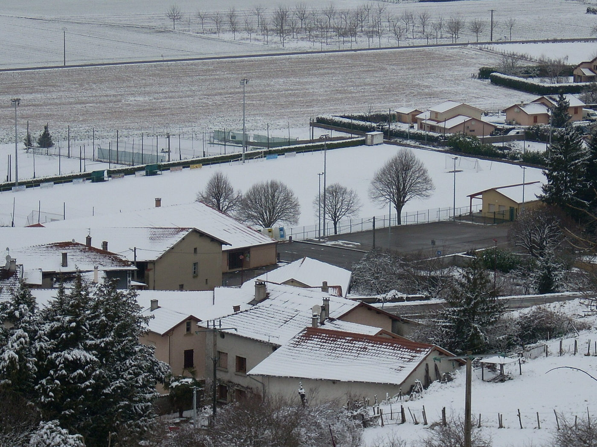

Accueil · La région
La campagne, entre Lyon et Vienne
Beauvoir-de-Marc, au cœur du Nord-Isère : le calme des champs et les grandes visites à moins d’une heure.

Beauvoir-de-Marc
Le village est posé dans la campagne du Nord-Isère, entre prairies, champs et collines. Le Domaine de Chasse est une ferme : autour du gîte, l’exploitation agricole de Béatrice et des chemins pour marcher au calme. Saint-Jean-de-Bournay et son marché du lundi sont à 10 minutes.

Vienne, à 25 minutes
La ville romaine au bord du Rhône : le théâtre antique, le temple d’Auguste et de Livie, la cathédrale Saint-Maurice et, chaque été, le festival Jazz à Vienne dans le théâtre antique.

Lyon, à 45 minutes
Le Vieux-Lyon, la colline de Fourvière, les traboules et les bouchons : une journée en ville, puis le retour au calme du gîte le soir.

Les cités médiévales
Crémieu et sa grande halle en bois du XVe siècle à 35 minutes, Pérouges et ses ruelles pavées à 55 minutes : deux des plus beaux villages de la région.

Le Palais idéal du facteur Cheval
À Hauterives, à 50 minutes : le palais qu’un facteur a bâti seul, pierre par pierre, pendant 33 ans. Une visite qui plaît aux petits comme aux grands.

Le lac de Paladru
À une heure, un lac aux eaux turquoise avec ses plages, pour la baignade et les balades d’été.

Les vins de la Côte-Rôtie
À Ampuis, à 35 minutes, les vignes en terrasses dominent le Rhône : caves et domaines ouvrent leurs portes pour une dégustation.

Le soir, retour au calme du domaine
Après une journée à Lyon ou à Vienne, la balnéo, le billard et la terrasse vous attendent.